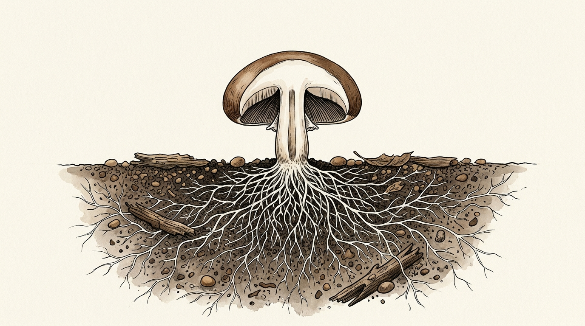

One distinction explains why a mushroom you see outdoors is only a small, temporary glimpse of the organism—and why growing mushrooms starts with something you usually cannot see.
The visible part is not the whole organism
In many familiar fungi, the main growing body is a network of fine threads called hyphae. The network is the mycelium. It may spread through soil, wood, or another food source.
A mushroom is a fruiting body: a reproductive structure that grows from the mycelium and releases spores. Think of it as the visible, spore-making part—not the entire fungus.

Above surface: Fruiting bodyCap, gills, and stem — temporary spore-maker
Anatomical view: cutting a mushroom in half reveals the protected gills beneath the cap, while underground its stem unravels straight into the hidden mycelial network.
Sporegerminates
Hyphaegrow into threads
Myceliumspreads and feeds
Mushroomreleases spores
Fungi do not make their own food using sunlight. They release substances that break food down outside their bodies, then absorb nutrients. That is why the substrate—the material a fungus grows through or on—matters so much in cultivation. OpenStax, “Characteristics of Fungi”
Now apply it. Each question is a situation—reason from the picture above.
Puzzle to chew on
Mushrooms sometimes pop up in a near-perfect circle on a lawn—a "fairy ring" (cerchio delle streghe). Using only what you read above, can you guess why a circle? Think first, then open.
One explanation
The mycelium starts at one point underground and grows outward in every direction. The centre gets used up—the fungus depletes the soil's nitrogen there—so the active, well-fed edge keeps moving out, and that's where mushrooms appear. OpenStax §24.2
This is why growing mushrooms is mostly waiting: the mycelium must first colonize its food source, and only then does it fruit. On shiitake logs that colonization takes one to two years; indoor kits are much faster, but the order is the same. Cornell Small Farms